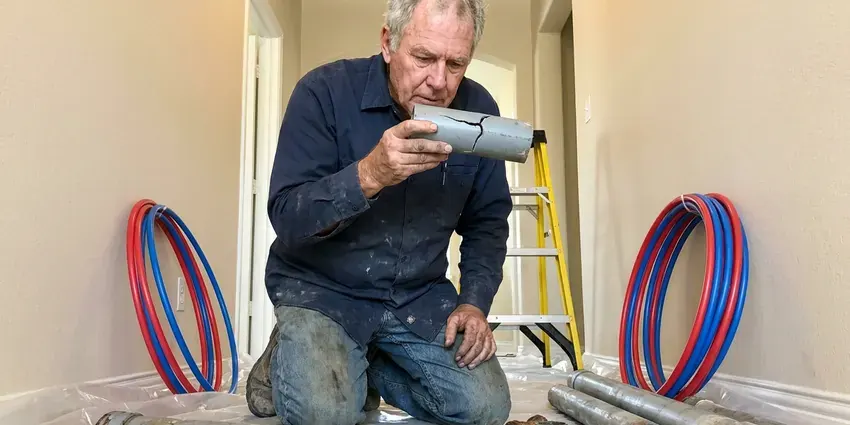

Sewer Replacement in Hutchinson, KS
For reliable sewer replacement throughout Hutchinson, KS, count on the experienced plumbers at KRV Plumbing. We handle everything from inspection to full system replacement.
- Same-Day Camera Inspections
- Cleanout Installation Included
- Upfront Pricing
- Quality Workmanship

Get Your Sewer Line Replaced Right in Hutchinson, KS.
Don't let a failing sewer line disrupt your home. Contact KRV Plumbing for a complete solution.
Sewer Replacement in Hutchinson, KS With Trenchless and Traditional Methods
KRV Plumbing specializes in complete sewer replacement services for homeowners across Kansas. We understand the specific challenges that soil conditions and tree root growth can pose to underground plumbing, leading to cracks, collapses, and ongoing blockages.
Our expertise includes:
- Expert trenching and trenchless sewer replacement methods.
- Expertly handle trenchless and traditional excavation methods.
- Video sewer inspections with locating to pinpoint breaks and bellies

Additional Plumbing Replacement Services in Hutchinson, KS
When repairs are no longer enough, our replacement services in Hutchinson, KS deliver durable upgrades that restore full performance.


Customers
Why Choose KRV Plumbing for Sewer Replacement in Hutchinson, KS?
Choosing the right contractor for sewer replacement is crucial for the longevity and functionality of your home's plumbing. KRV Plumbing brings years of experience to every job.
- Trenchless Options, Pipe bursting and lining reduce yard and driveway damage.
- Permit Compliance, Sewer replacement often requires permits. We manage all necessary permits to ensure your project in Hutchinson meets local building codes and regulations.
- Licensed Experts, Our plumbers are fully licensed, insured, and highly trained in all aspects of sewer system repair and replacement.
Citywide Coverage
We replace sewer lines throughout Hutchinson, from older neighborhoods with clay pipe to newer homes with damaged PVC. We handle short laterals and long lines to the street.
Experienced Team
Our team of plumbing professionals has broad experience diagnosing and executing sewer replacements for a wide range of property types. They are regularly trained on the latest techniques and equipment to ensure efficient and effective service.
Safety-First Approach
Sewer work involves deep trenches and wastewater, so we follow trench safety and sanitation practices. We shield your home from sewer gas and contamination.
Trusted Certified Hutchinson Plumbing Services Professionals
At KRV Plumbing, we take pride in providing certified plumbing services throughout Hutchinson, KS. Backed by recognized industry credentials, our experienced plumbers combine technical skill with genuine customer care. Whether it is repair, installation, or maintenance, we follow strict safety and quality standards to deliver long-lasting results you can trust.
Call Us Now PHCC Plumbing Contractor Recognition
PHCC Plumbing Contractor Recognition Better Business Bureau (BBB) Accreditation
Better Business Bureau (BBB) Accreditation Angi Certified Pro
Angi Certified Pro ISO 9001 Quality Management Certification
ISO 9001 Quality Management CertificationLong-Term Sewer Replacement Services in Hutchinson, KS
Sewer Scope Inspections for Replacement in Hutchinson
Before any replacement work begins, our team performs thorough sewer camera inspections. This allows us to visually assess the condition of your existing sewer line, pinpoint the exact location and nature of the damage, and determine the most appropriate replacement strategy. This diagnostic step is crucial for accurate estimates and effective solutions in Hutchinson.

Cast Iron Sewer Replacement in Hutchinson
Cast iron sewer pipe can corrode from the inside, creating rough surfaces and holes. Scale buildup snags debris and causes clogs. We replace cast iron with PVC or HDPE. This restores flow and ends corrosion. Many homes built before 1975 have cast iron lines.
Code-Compliant Sewer Replacement in Hutchinson
All sewer replacement work performed by KRV Plumbing in Hutchinson closely adheres to local plumbing codes and regulations. This includes proper pipe sizing, depth, slope, and connection methods. Obtaining the necessary permits and ensuring inspections are passed is a key part of our process. We handle all the paperwork and coordination, ensuring your new sewer line is not only functional but also fully compliant with all municipal requirements, avoiding future issues or penalties.
Trenchless Sewer Replacement Options in Hutchinson, KS
When appropriate, trenchless sewer replacement offers a less invasive alternative to traditional digging. Methods like pipe bursting or pipe lining allow us to replace or repair your sewer line with minimal excavation, often only requiring two access points. This can save your lawn, driveway, and landscaping from major damage, making it a popular choice for homeowners in Hutchinson who want to preserve their property's appearance. We'll determine if your sewer line is a good candidate for this advanced technique.
Traditional Trench Sewer Replacement in Hutchinson
For severely damaged or collapsed sewer lines, traditional trenching is often the most reliable solution. This involves excavating a trench along the sewer line's path to allow for direct access and replacement of the entire pipe. While more invasive, it provides a complete overhaul and is often necessary for older homes with clay or cast iron pipes that have reached the end of their lifespan. We ensure thorough planning and execution to minimize disruption to your yard.
Sewer Line Repair vs. Full Replacement in Hutchinson
Deciding between repair and full replacement depends on the extent and nature of the damage. Minor cracks or isolated clogs might be resolved with targeted repairs, but widespread corrosion, multiple breaks, or a collapsed pipe often necessitates a full replacement. Our technicians in Hutchinson will conduct a thorough camera inspection to accurately diagnose the problem and recommend the most cost-effective and long-term solution. We provide clear explanations and upfront pricing for both options.
Residential Sewer Replacement in Hutchinson, KS
KRV Plumbing specializes in residential sewer replacement, understanding the specific needs and infrastructure of homes across Hutchinson. Whether you're dealing with a failing main line, collapsed pipes from shifting soil, or frequent backups due to aging infrastructure, we provide tailored solutions that ensure your home's plumbing system functions reliably for years to come.

Commercial Sewer Replacement in Hutchinson
Commercial buildings often have larger sewer lines and grease issues. We replace commercial laterals and work with businesses to reduce downtime. We may install grease interceptors as needed. We handle permits and city coordination. Our crews work quickly to restore service.
Sewer Replacement Near Me in Hutchinson, KS
Our team is always close by, ready to dispatch to your location in Hutchinson for a thorough assessment of your sewer line issues. We pride ourselves on quick response times and lasting solutions, ensuring that your sewer replacement project is handled efficiently and professionally from start to finish.
If you are searching for sewer replacement near me, you need a local team with the proper equipment. KRV Plumbing serves Hutchinson with camera inspection and trenchless replacement. We can schedule fast for urgent problems.
KRV Plumbing at a Glance
- Licensed and insured plumbers serving Hutchinson, KS
- 24/7 emergency service with same-day scheduling
- Clear written estimates, no hidden fees
- 4.9-star rated by 910+ Kansas customers
Hutchinson Map
Hutchinson Information
- Population
- 39,662
- Area codes
- Local
- Service area
- Hutchinson and communities within 40 miles
- Nearby
- Wichita, Derby, Salina, Junction City
Aging cast iron and clay sewer lines combined with root intrusion and shifting soils make sewer replacement a key investment for homes in Hutchinson, KS.
Expert Services
Trust our professionals for reliable KRV Plumbing solutions in Hutchinson, KS.
Our Specialized Plumbing Services in Hutchinson, KS
At KRV Plumbing, we provide a complete range of plumbing services across Hutchinson, KS. From leak detection to full system installations, our team ensures fast, precise, and affordable service for both residential and commercial properties. Explore our core services below:


How Our Sewer Replacement Process Works in Hutchinson, KS
From the initial call to the final inspection, we ensure a seamless and professional experience for every sewer replacement project.
Request a Quote
Start by calling (316) 229-8459 to schedule a consultation. We'll discuss your concerns and set up a good time for an on-site evaluation of your sewer system.
Diagnosis & Plan
Our technicians will perform a detailed sewer camera inspection to accurately diagnose the problem. We then present you with a clear plan and upfront pricing for the replacement.
Permit & Prep
Once you approve the plan, we handle all necessary permits with Hutchinson authorities. Our team then prepares the site, ensuring safety and guarding your property.
Frequently Asked Questions About Sewer Replacement in Hutchinson
Sewer replacement usually costs $4,500 to $12,000 depending on length, depth and method. Trenchless pipe bursting often runs $6,000 to $15,000, while under-slab work can cost even more.
Sewer line replacement is a complex and dangerous job that should only be performed by licensed and experienced professionals. It involves excavation, working with potentially contaminated materials, understanding plumbing codes, and operating heavy equipment. Attempting a DIY replacement can lead to serious health risks, code violations, and even more costly damage to your property. It is highly recommended to hire a professional plumbing company like KRV Plumbing.
Key signs include frequent backups or clogs in multiple drains, gurgling noises from toilets, sewage odors in your yard or basement, unusually lush or wet spots in your lawn, and sudden dips or sinkholes in your yard. A sewer camera inspection can verify the exact issue.
Yes, most cities require permits for sewer replacement. We take care of permits and inspections.
Modern sewer lines are typically replaced with PVC (polyvinyl chloride) piping due to its durability, resistance to corrosion, and smooth interior that minimizes blockages. In some cases, high-quality cast iron might still be used, depending on particular project needs or local codes in Hutchinson.
Sewer line replacement is a complex job that involves major excavation, connection to municipal systems, and adherence to strict plumbing codes. It requires specialized equipment and expertise. Attempting DIY replacement can lead to further damage, code violations, and higher costs in the long run. It is strongly recommended to hire licensed professionals like KRV Plumbing.
We provide a written labor warranty on every sewer replacement. HDPE and PVC pipe also carry long-term manufacturer warranties, and a correctly installed line can last 50 years or more.
We mainly work with reputable manufacturers of high-quality PVC and ABS sewer pipes known for their durability and longevity. While specific brands can vary based on availability and project requirements, we ensure that all materials meet or exceed industry standards. Our focus is always on installing reliable, long-lasting products that provide excellent performance for your Hutchinson home.
What People Are Saying About Our Plumbing Experts?

Patricia H.
We had a slab leak that two other companies could not find. KRV Plumbing located it in under an hour, explained our options, and the price matched the quote to the dollar.
Slab Leak Repair · Emporia, KS
Laura S.
I scheduled a water heater replacement, and the team made the process smooth and affordable. The new unit works perfectly, and they cleaned up after completing the job.
Water Heater Replacement · Salina, KS
Daniel K.
A pipe burst at 11 pm and they actually answered. The plumber showed up within the hour, shut everything down, and had us back to normal the next morning. Could not ask for more.
Emergency Plumbing · Wichita, KS
Emily R.
I called KRV Plumbing for plumbing repair, and the technician was fast, polite, and thorough. They explained the problem clearly and fixed it the same day. I will definitely hire them again. Highly recommended!
Plumbing Repair · Junction City, KSSofia M.
Two new toilets installed in one visit, no mess left behind, and the tech even adjusted a faucet he noticed was dripping. Fair pricing and really friendly.
Toilet Installation · Emporia, KS
James P.
Our commercial plumbing system had a leak under the sink, and KRV Plumbing handled it professionally. The plumbers arrived quickly and restored everything without disruption to our customers.
Commercial Plumbing · Derby, KS